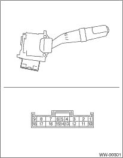
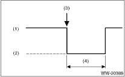

WIPER AND WASHER SYSTEMS > Combination Switch (Wiper)
1. INSPECT THE CONTINUITY BETWEEN EACH CONNECTOR TERMINAL.

|
Switch position |
Terminal No. |
Standard | |
|
Front |
OFF |
7 and 16 |
Less than 1 Ω |
|
INT |
7 and 16 |
Less than 1 Ω | |
|
LO |
7 and 17 |
Less than 1 Ω | |
|
HI |
8 and 17 |
Less than 1 Ω | |
|
Washer ON |
2 and 11 |
Less than 1 Ω | |
|
Rear |
Washer ON |
2 and 10 10 and 12 2 and 12 |
Less than 1 Ω |
|
OFF |
2 and 10 2 and 12 2 and 13 10 and 12 10 and 13 12 and 13 |
1 MΩ or more | |
|
ON |
2 and 10 |
Less than 1 Ω | |
|
Washer ON |
2 and 10 10 and 12 2 and 12 |
Less than 1 Ω |
If continuity is not as specified, replace the switch.
2. CHECK THE INTERMITTENT OPERATION (INSPECTION OF THE WIPER SWITCH ALONE)
• Intermittent operation inspection (Except for KA model)
1. Connect the voltmeter between switch terminal 7 (+) and 2 (−).
2. Connect the battery between switch terminal 17 (+) and 2 (−).
3. Turn the front wiper switch to INT.
4. Connect the battery positive terminal to the switch terminal 16 for 5 seconds.
5. Connect the battery negative terminal to the switch terminal 16 and measure the voltage between switch terminal 7 and 2 when performing the intermittent operation.
6. Perform step 1) to 5) when intermittent control switch is in MIN or MAX, and check that the operation is specified below.
Terminals
No. 7 — No. 2:

|
(1) |
Approx. 12 V |
|
(2) |
Approx. 0 V |
|
(3) |
Connect the battery negative terminal to the switch terminal 16. |
|
(4) |
Intermittent stationary time |
Specification for intermittent stationary time
MIN: Approx. 2 seconds
MAX: Approx. 16±6 seconds
7. If operation is not as specified, replace the switch.
• Intermittent operation inspection (KA model)
1. Connect the voltmeter between switch terminal 3 (+) and 8 (−).
2. Connect the battery between switch terminal 11 (+) and 8 (−).
3. Turn the front wiper switch to INT.
4. Connect the battery positive terminal to the switch terminal 12 for 5 seconds.
5. Connect the battery negative terminal to the switch terminal 12 and measure the voltage between switch terminal 3 and 8 when performing the intermittent operation.
6. Perform step 1) to 5) when intermittent control switch is in MIN or MAX, and check that the operation is specified below.
Terminals
No. 3 — No. 8:
|
(1) |
Approx. 12 V |
|
(2) |
Approx. 0 V |
|
(3) |
Connect the battery negative terminal to the switch terminal 12. |
|
(4) |
Intermittent stationary time |
Specification for intermittent stationary time
MIN: Approx. 2 seconds
MAX: Approx. 16±6 seconds
7. If operation is not as specified, replace the switch.